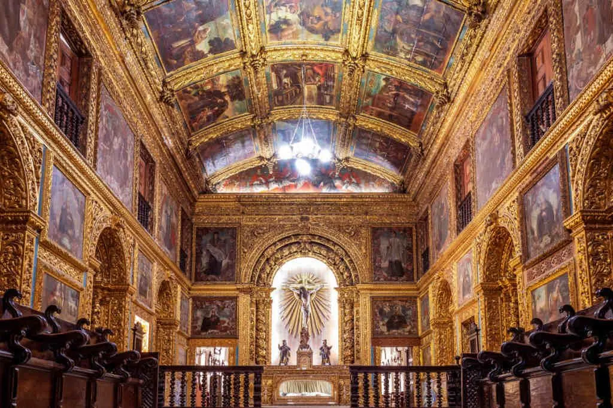

Além do Marco Zero é possível conhecer também vários outros pontos turísticos no Recife antigo. A seguir vamos destacar dois grandes e importantes que diariamente recebem diversos turistas.

A Igreja da Ordem Terceira de São Francisco é um templo católico localizado na cidade do Recife. É conhecida por Capela Dourada pelo fato de cada polegada de seu interior estar revestida de ouro. Integra o Conjunto Franciscano do Recife e é a única do circuito que cobra taxa de visitação, já que compõem o Museu Franciscano de Arte Sacra.
